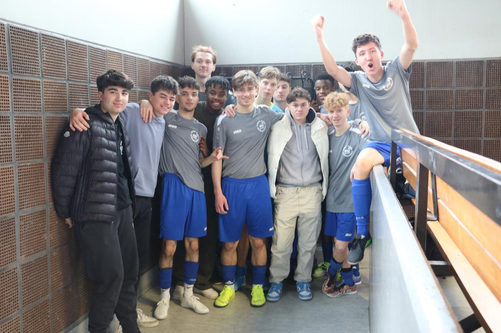

ABI A-Junioren: Vorrunde der WFV Hallenmeisterschaft
Am 18.02. waren wir in Fellbach zur Vorrunde der WFV Hallenmeisterschaften. An diesem Tag lernten unsere A-Jugendlichen eine Fußballweisheit kennen "Wer vorne die Dinger nicht macht, wird hinten bestraft". Von 5 Spielen konnten wir 2 gewinnen und wurden somit 4. unserer Vorrundengruppe, aber ehrlich gesagt gab es an diesem Tag nur eine Mannschaft die besser war. Also sind wir für unser Ausscheiden selbst verantwortlich, so bitter wie es ist. Ab jetzt gilt voller Fokus auf den Rest unserer Vorbereitung. Nach einigen Absagen hoffen wir am 24.02. gegen Türkspor Neckarsulm testen zu können. Geplant ist das Spiel um 15 Uhr in Beilstein.
